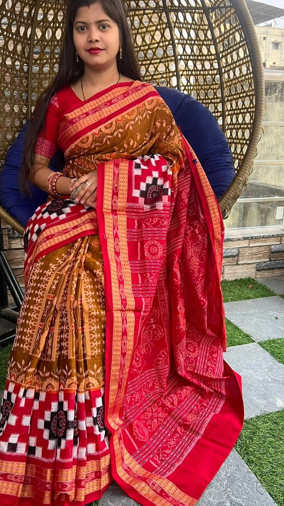

An eminent geographical indication, sambalpuri sarees find their home in the state of Odisha.
A Sambalpuri saree is a traditional handwoven bandha sari wherein the warp and the weft are tie-dyed before weaving. It is produced in the Sambalpur, Balangir, Bargarh, Boudh and Sonepur districts of Odisha, India
Sambalpuri sarees are traditional handloom sarees from Odisha, India, made from fabric woven on a hand-loom using the Ikkat or Bandhakala weaving process. This process involves tying and dyeing threads to create the desired patterns, which is called Baandha. The weavers use shuttle-pit looms made of ropes, wooden beams, and poles to create intricate patterns. The loom is then filled with new threads that are tied to the old ones, and the weaver throws the shuttles from side to side. The process can take more than two weeks, and the entire design is reflected almost identically on both sides of the fabric
